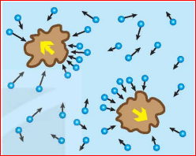
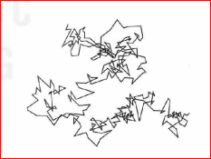
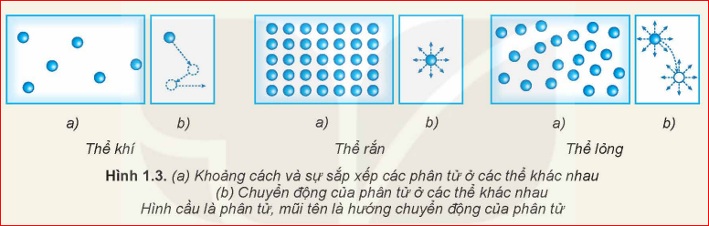
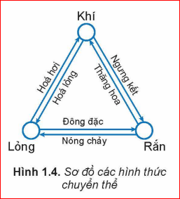
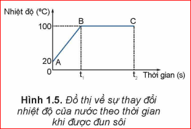
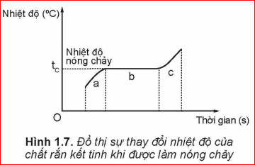
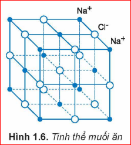

MÔ HÌNH ĐỘNG HỌC PHÂN TỬ VỀ CẤU TẠO CHẤT
Mô hình động học phân tử về cấu tạo chất gồm các nội dung cơ bản:
- Các chất được cấu tạo từ các hạt riêng biệt là phân tử.
- Các phân tử chuyển động không ngừng. Nhiệt độ của vật càng cao thì tốc độ chuyển động của các phân tử cấu tạo nên vật càng lớn.
- Giữa các phân tử có lực hút và đẩy gọi chung là lực liên kết phân tử.
* Thuật ngữ phân tử trong mô hình trên được dùng để chỉ chung các hạt cấu tạo chất: phân tử, nguyên tử, ion.

Hình 1.1. Chuyển động của các phân tử nước và các hạt phấn hoa
Mũi tên đen: hướng chuyển động của phân tử nước | Mũi tên vàng: hướng chuyển động của hạt phấn hoa

Hình 1.2. Quỹ đạo chuyển động của hạt phấn hoa trong nước
Trong lịch sử phát triển của khoa học, có hai quan điểm khác nhau về cấu tạo chất là quan điểm chất có cấu tạo liên tục và chất có cấu tạo gián đoạn. Mô hình động học phân tử được xây dựng trên quan điểm nào?
Năm 1827, khi làm thí nghiệm quan sát các hạt phấn hoa rất nhỏ trong nước bằng kính hiển vi, Brown thấy chúng chuyển động hỗn loạn, không ngừng (Hình 1.1 và 1.2).
a) Tại sao thí nghiệm của Brown được coi là một trong những thí nghiệm chứng tỏ các phân tử chuyển động hỗn loạn, không ngừng?
b) Làm thế nào để với thí nghiệm của Brown có thể chứng tỏ được khi nhiệt độ của nước càng cao thì các phân tử nước chuyển động càng nhanh?
a) Do các phân tử nước chuyển động hỗn loạn không ngừng, va chạm vào hạt phấn hoa từ nhiều phía không cân bằng, làm cho hạt phấn hoa chuyển động hỗn loạn. Vì vậy chuyển động của hạt phấn hoa gián tiếp chứng tỏ các phân tử nước chuyển động hỗn loạn không ngừng.
b) Khi tăng nhiệt độ của nước, ta quan sát thấy các hạt phấn hoa chuyển động hỗn loạn càng nhanh. Điều này chứng tỏ khi nhiệt độ tăng thì các phân tử nước chuyển động càng nhanh, va chạm vào hạt phấn hoa mạnh hơn và nhiều hơn.
Hãy tìm các hiện tượng thực tế chứng tỏ giữa các phân tử có lực đẩy, lực hút.
- Lực hút: Hai sợi dây chì gấp nếp nén chặt vào nhau có thể dính chặt vào nhau; hoặc dùng lực kéo nén một thanh kim loại rất khó đứt chứng tỏ có lực hút giữ các phân tử.
- Lực đẩy: Rất khó nén một thể tích chất lỏng hoặc chất rắn chứng tỏ giữa các phân tử có lực đẩy chống lại sự lại gần nhau.
CẤU TRÚC CỦA CHẤT RẮN, CHẤT LỎNG VÀ CHẤT KHÍ
Dựa vào các đặc điểm sau đây của phân tử có thể nêu được sơ lược cấu trúc của hầu hết các chất rắn, chất lỏng, chất khí:
- Khoảng cách giữa các phân tử càng lớn thì lực liên kết giữa chúng càng yếu.
- Các phân tử sắp xếp có trật tự thì lực liên kết giữa chúng mạnh.

Hình 1.3. (a) Khoảng cách và sự sắp xếp các phân tử ở các thể khác nhau | (b) Chuyển động của phân tử ở các thể khác nhau
| Đặc điểm | Thể khí | Thể rắn | Thể lỏng |
|---|---|---|---|
| Khoảng cách phân tử | Rất lớn | Rất nhỏ | Trung bình (lớn hơn chất rắn, nhỏ hơn chất khí) |
| Sắp xếp | Hỗn loạn, không có trật tự | Trật tự, chặt chẽ | Kém trật tự hơn chất rắn |
| Chuyển động | Hỗn loạn về mọi phía | Dao động quanh vị trí cân bằng cố định | Dao động quanh vị trí cân bằng luôn di chuyển |
| Lực liên kết | Rất yếu | Rất mạnh | Trung bình |
Hãy dựa vào Hình 1.3 để mô tả, so sánh khoảng cách và sự sắp xếp (a), chuyển động (b) của phân tử ở các thể khác nhau. Từ đó mô tả một cách sơ lược về cấu trúc của chất rắn, chất lỏng, chất khí.
- Thể lỏng: Khoảng cách phân tử lớn hơn chất rắn, sắp xếp kém trật tự hơn, dao động quanh vị trí cân bằng di động.
- Thể khí: Khoảng cách phân tử rất lớn, chuyển động hỗn loạn không ngừng về mọi phía.
Hãy giải thích các đặc điểm sau đây của thể khí, thể rắn, thể lỏng:
a) Chất khí không có hình dạng và thể tích riêng, luôn chiếm toàn bộ thể tích bình chứa và có thể nén được dễ dàng.
b) Vật ở thể rắn có thể tích và hình dạng riêng, rất khó nén.
c) Vật ở thể lỏng có thể tích riêng nhưng không có hình dạng riêng.
a) Thể khí: Lực liên kết giữa các phân tử rất yếu nên các phân tử chuyển động tự do về mọi phía làm chất khí chiếm toàn bộ bình chứa. Khoảng cách giữa các phân tử lớn nên dễ bị nén.
b) Thể rắn: Lực tương tác phân tử rất mạnh giữ các phân tử ở các vị trí cố định tạo ra hình dạng và thể tích riêng xác định, khoảng cách giữa các phân tử nhỏ nên rất khó nén.
c) Thể lỏng: Lực liên kết phân tử đủ mạnh để giữ chất lỏng có thể tích riêng, nhưng không đủ mạnh để giữ vị trí cố định nên chất lỏng mang hình dạng của phần bình chứa nó.
SỰ CHUYỂN THỂ
1 Sự chuyển thể
Các chất có thể chuyển từ thể này sang thể khác. Đa số các chất ở thể rắn khi nóng lên có thể chuyển sang thể lỏng, rồi từ thể lỏng sang thể khí. Ngược lại, đa số chất khí khi lạnh đi có thể chuyển sang thể lỏng, rồi từ thể lỏng sang thể rắn. Một số chất có thể chuyển trực tiếp từ thể rắn sang thể khí và ngược lại.

Hình 1.4. Sơ đồ các hình thức chuyển thể
2 Dùng mô hình động học phân tử giải thích sự chuyển thể
Trong khi chuyển động hỗn loạn, các phân tử va chạm vào nhau, truyền năng lượng cho nhau. Càng nhận được nhiều năng lượng thì các phân tử chuyển động hỗn loạn càng nhanh, khoảng cách trung bình giữa chúng càng tăng, lực liên kết giữa chúng càng yếu.
a) Giải thích sự hóa hơi
Sự hóa hơi xảy ra dưới hai hình thức là bay hơi và sôi.
- Sự bay hơi: Là sự hoá hơi xảy ra ở mặt thoáng của chất lỏng. Một số phân tử ở gần mặt thoáng có động năng đủ lớn để thắng lực liên kết của các phân tử chất lỏng khác, thoát ra khỏi mặt thoáng thành thể hơi.
- Sự sôi: Là sự hoá hơi xảy ra đồng thời ở bên trong và trên mặt thoáng của chất lỏng khi đun đến nhiệt độ sôi (Ví dụ: nước sôi ở \(100^\circ\text{C}\) dưới áp suất tiêu chuẩn \(1,01.10^5\text{ Pa}\)).

Hình 1.5. Đồ thị về sự thay đổi nhiệt độ của nước theo thời gian khi được đun sôi
❓ Tại sao khi bay hơi nhiệt độ của chất lỏng giảm?
Hãy dựa vào đồ thị ở Hình 1.5 để mô tả sự thay đổi nhiệt độ của nước khi được đun từ \(20^\circ\text{C}\) tới khi sôi.
- Từ điểm B trở đi: Nước bắt đầu sôi, nhiệt độ giữ không đổi ở \(100^\circ\text{C}\) trong suốt quá trình sôi.
Khi nước đang sôi thì năng lượng mà nước nhận được từ nguồn nhiệt có được chuyển hoá thành động năng của các phân tử nước không? Tại sao?
b) Giải thích sự nóng chảy của chất rắn kết tinh

Hình 1.7. Đồ thị sự thay đổi nhiệt độ của chất rắn kết tinh khi được làm nóng chảy
Giai đoạn a: Chưa nóng chảy | Giai đoạn b: Đang nóng chảy | Giai đoạn c: Đã nóng chảy hoàn toàn
Tại sao chất rắn kết tinh khi được đun nóng có thể chuyển thành chất lỏng?
a) Hãy dựa vào Hình 1.7 để mô tả quá trình nóng chảy của chất kết tinh.
b) Giải thích tại sao khi đang nóng chảy, nhiệt độ của chất rắn kết tinh không tăng dù vẫn nhận được nhiệt năng. Năng lượng nhận được dùng để làm gì?
a) Giai đoạn a: Nhiệt độ tăng đến nhiệt độ nóng chảy \(t_c\). Giai đoạn b: Chất rắn bắt đầu nóng chảy, nhiệt độ giữ nguyên ở \(t_c\). Giai đoạn c: Toàn bộ chất rắn đã chuyển sang lỏng, nhiệt độ tiếp tục tăng.
b) Nhiệt độ không tăng vì năng lượng nhận được không dùng làm tăng động năng phân tử mà dùng để phá hủy cấu trúc mạng tinh thể của chất rắn.
EM CÓ BIẾT: Chất rắn kết tinh và chất rắn vô định hình
Chất rắn kết tinh là chất mà các hạt (phân tử, nguyên tử, ion) liên kết chặt chẽ, sắp xếp theo một trật tự hình học tuần hoàn tạo thành mạng tinh thể (Hình 1.6 - Ví dụ: tinh thể muối ăn \(\text{NaCl}\), hầu hết kim loại). Chất rắn kết tinh có nhiệt độ nóng chảy xác định.
Chất rắn vô định hình không có cấu trúc mạng tinh thể (Ví dụ: thủy tinh, nhựa đường, chất dẻo) và không có nhiệt độ nóng chảy xác định.

Hình 1.6. Tinh thể muối ăn (\(\text{Na}^+\), \(\text{Cl}^-\))
EM CÓ BIẾT: Thể Plasma
Ở nhiệt độ hàng triệu độ, chất không tồn tại ở các thể rắn, lỏng, khí mà ở một thể đặc biệt gọi là Plasma. Ở thể này, chất không tồn tại dưới dạng các nguyên tử, phân tử mà dưới dạng các ion. Plasma rất ít gặp trên Trái Đất nhưng trong vũ trụ có tới trên 99% các chất tồn tại ở thể Plasma.

Hình 1.8. Luồng Plasma phóng ra từ Mặt Trời
EM ĐÃ HỌC
- Mô hình động học phân tử về cấu tạo chất:
- Các chất được cấu tạo từ các hạt riêng biệt là phân tử.
- Các phân tử chuyển động không ngừng. Nhiệt độ của vật càng cao thì tốc độ trung bình của các phân tử càng lớn.
- Giữa các phân tử có lực liên kết phân tử.
- Các chất có thể chuyển từ thể này sang thể khác.
EM CÓ THỂ
- Giải thích được sự khác nhau giữa các thể của chất và cơ chế của sự chuyển thể.
- Tìm hiểu và trình bày được vai trò của sự chuyển thể đối với cuộc sống con người như vòng tuần hoàn nước, công nghệ đúc,...
🎮 GAMESHOW: AI LÀ TRIỆU PHÚ 🎮
Trả lời 10 câu hỏi củng cố kiến thức bài học!
BÀI TẬP TỰ LUẬN TÍNH TOÁN
Bài 1:
Một lượng nước có khối lượng \(m = 2\text{ kg}\) được đun nóng từ \(20^\circ\text{C}\) đến nhiệt độ sôi \(100^\circ\text{C}\). Tính nhiệt lượng cần cung cấp cho nước. Biết nhiệt dung riêng của nước là \(c = 4180\text{ J/kg.K}\).
Lời giải:
Độ tăng nhiệt độ của nước: \(\Delta t = 100 - 20 = 80^\circ\text{C}\)
Nhiệt lượng cần cung cấp cho nước để đun sôi là:
$$Q = m \cdot c \cdot \Delta t = 2 \cdot 4180 \cdot 80 = 668\,800\text{ J} = 668,8\text{ kJ}$$
Bài 2:
Tính nhiệt lượng cần thiết để hóa hơi hoàn toàn \(0,5\text{ kg}\) nước ở \(100^\circ\text{C}\). Biết nhiệt hóa hơi riêng của nước là \(L = 2,26.10^6\text{ J/kg}\).
Lời giải:
Nhiệt lượng cần thiết để hóa hơi hoàn toàn khối lượng nước trên là:
$$Q = m \cdot L = 0,5 \cdot 2,26.10^6 = 1,13.10^6\text{ J} = 1130\text{ kJ}$$
Bài 3:
Tính nhiệt lượng để làm nóng chảy hoàn toàn \(1,5\text{ kg}\) đá vôi/nước đá ở nhiệt độ nóng chảy \(0^\circ\text{C}\). Biết nhiệt nóng chảy riêng của nước đá là \(\lambda = 3,34.10^5\text{ J/kg}\).
Lời giải:
Nhiệt lượng cần thiết để làm nóng chảy hoàn toàn khối nước đá là:
$$Q = m \cdot \lambda = 1,5 \cdot 3,34.10^5 = 5,01.10^5\text{ J} = 501\text{ kJ}$$